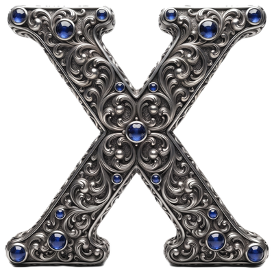
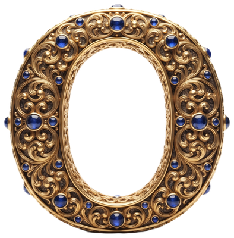

Triki
Temática:
Clásico (X / O)
Mascotas (gato / perro)
Vehículos (carro / moto)
Día y noche (luna / sol)
Deportes (fútbol / baloncesto)

Usuario 1
Rondas ganadas:
0
Turno de Usuario 1
Empates:
0
Total de juegos:
0

Usuario 2
Rondas ganadas:
0
Nueva ronda
Reiniciar marcador